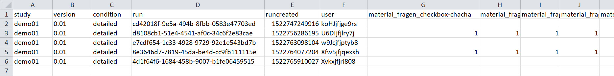
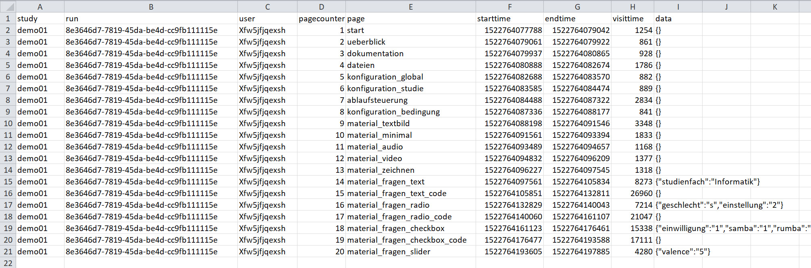
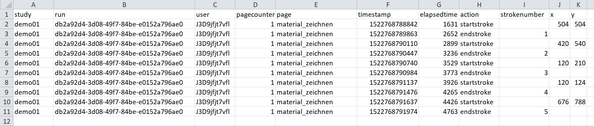
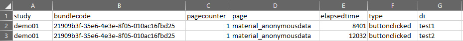

CSV-Compact ist ein kompaktes Datenformat das gut für Fragebögen geeignet ist.
CSV-Pagevisits stellt einzelne Seitenaufrufe dar und ermöglicht Ablaufverfolgung.
CSV-Actionlog kann zum Loggen einzelner Aktionen wie z.B. Video-Pause verwendet werden.
CSV-Anonymousdata ermöglicht ein Logging getrennt von den übrigen Versuchsdaten (z.B. E-Mail für Gutscheinverlosung).
Dateidownload für vom Benutzer generierten Content (z.B. Zeichnungen, Audioaufnahmen)

Excel-Ansicht einer Logdatei im CSV-Compact-Format

Excel-Ansicht einer Logdatei im CSV-Pagevisits-Format

Excel-Ansicht einer Logdatei im CSV-Actionlog-Format

Excel-Ansicht einer Logdatei im CSV-Anonymousdata-Format